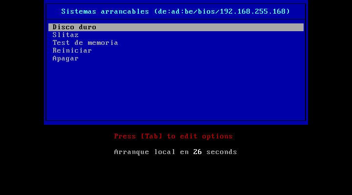

7.6.3.3. Configuración de syslinux¶
Para escribir la configuración es necesario tener presentes tres cosas:
Al establecer la estructura de ficheros, se decidió que todo lo necesario para la configuración de syslinux se encuentra dentro del subdirectorio
/srv/tftp/cfg.Los ficheros de arranque de los sistemas operativos se encuentran dentro de
/srv/tftp/ssoo.El directorio de trabajo, sin embargo, es
/srv/tftp/bios/12.
Esto determina cuál será la ruta relativa que deberemos usar con los distintos ficheros que refiramos en la configuración:
Los módulos podemos citarlos sin más:
KERNEL reboot.c32 -wLa referencia a ficheros de configuración, imágenes, etc. que se encuentren bajo
/srv/tftp/cfgdeberemos hacerla con../cfg. Por ejemplo:MENU BACKGROUND ../cfg/images/fondo.pngLa referencia a ficheros de los sistemas operativos arrancables deberá hacerse con
../ssoo. Por ejemplo:KERNEL ../ssoo/slitaz/bzImage
Desarrollemos una configuración de ejemplo que ilustre cómo escribirlas.
7.6.3.3.1. ¿Qué hace nuestra configuración?¶
En realidad, nada del otro mundo:
Ofrece una primera interfaz sin menú para seleccionar el sistema escribiendo su etiqueta, a menos que escribamos «menu».
En tal caso, vuelve a permitir la selección de los mismas sistemas de arranque, pero a través de un menú no gráfico.
Las opciones de arranque son:
Comprobar la memoria.
Arrancar SliTaZ.
Proseguir la secuencia de arranque.
Reiniciar el ordenador.
Apagar el ordenador.
Nota
¿Y no se puede mostrar directamente el menú no gráfico? Por supuesto, pero obrar de esta forma da un poco más de juego y permite hacer la configuración un poco más completa.
7.6.3.3.2. Requisitos¶
Aparte de memtest y SliTaZ, necesitamos incluir dentro del
subdirectorio bios/syslinux los siguientes módulos:
ldlinux.c32.libcom32.c32libutil.c32poweroff.c32
7.6.3.3.3. Ficheros¶
Observando estos principios, hagamos una configuración bastante simple que sirva de modelo:
cfg/boot.phpEs el script inicial. Se limita a recoger los datos que recibe del cliente (MAC y arquitectura) y pasárselos a su versión de menú. Usa la interfaz más sencilla de selección.
Los sistemas arrancables están enumerados en
items.cfg:<?php header('Content-type: text/plain'); $MAC = $_GET["mac"]; $ARCH = $_GET["arch"]; ?> PROMPT 1 TIMEOUT 100 DEFAULT reboot INCLUDE ../cfg/items.cfg LABEL menu CONFIG ../cfg/menu.php?mac=<?php echo "$MAC"."&arch=$ARCH"; ?>
cfg/items.cfgNos vale para ilustrar cómo enumerar algunos sistemas arrancables3:
LABEL local MENU LABEL Disco duro LOCALBOOT -1 LABEL slitaz MENU LABEL Slitaz KERNEL ../ssoo/slitaz/bzImage APPEND initrd=../ssoo/slitaz/rootfs.gz lang=es_ES kmap=es rw root=/dev/null vga=normal autologin BOOT_IMAGE=../ssoo/slitaz/bzImage LABEL memtest MENU LABEL Test de memoria LINUX ../ssoo/memtest86+.bin LABEL reboot MENU LABEL Reiniciar KERNEL reboot.c32 -w LABEL apagar MENU LABEL Apagar COM32 poweroff.c32
cfg/menu.phpEs la versión medio bonita (la bonita usaría el módulo vesamenu.c32) de la configuración que también proporciona
boot.php:<?php header('Content-type: text/plain'); $TIPO = implode(":", array_slice(explode("-", $_GET["mac"]), 0, 3)); $ARCH = $_GET["arch"]; $CLIENTE = $_SERVER['REMOTE_ADDR']; ?> UI menu.c32 DEFAULT local TIMEOUT 300 MENU AUTOBOOT Arranque local en # seconds MENU TITLE Sistemas arrancables (<?php echo "$TIPO/$ARCH/$CLIENTE"; ?>) INCLUDE ../cfg/items.cfg
El título del menú muestra la arquitectura, el tipo de máquina (los tres primeros pares de la MAC) y la ip del cliente como demostración de que podemos hacer uso de esos datos para personalizar la configuración dependiendo del cliente:

Notas al pie
- 1
O su equivalente para arquitecturas efi32 y efi64.
- 2
Habría que decir más bien
http://192.168.255.1/boos/bios/otftp://192.168.255.1/bios/, pero, como usaremos rutas relativas en la configuración, no debe preocuparnos demasiado la imprecisión.- 3
Uno de ellos es SliTaz que es un linux mínimo, útil en algunos casos. Sus dos ficheros citados, se extraen de su imagen iso y los parámetros para cargarlo se han copiado de los que muestra el syslinux de arranque de la propia distribución.